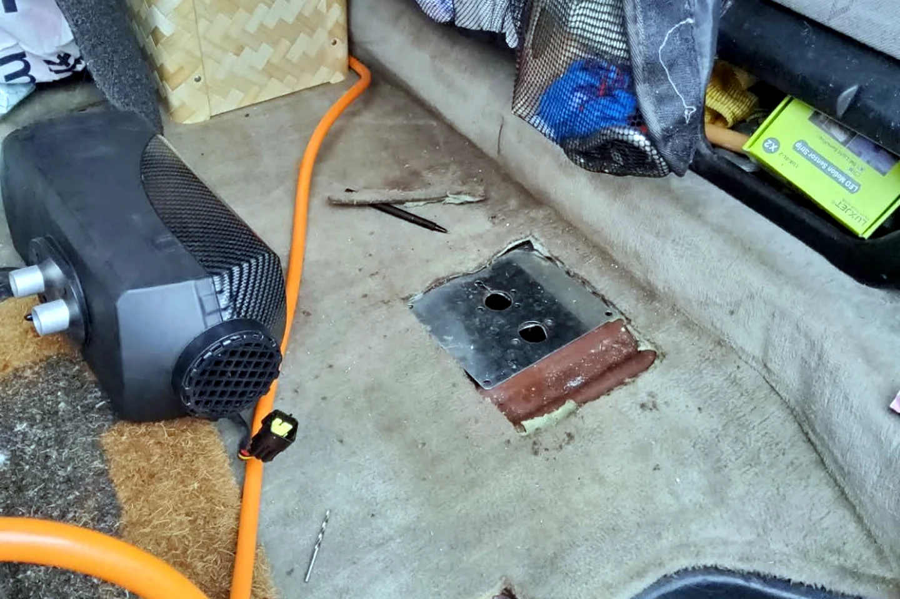

Verrückt: Ich tanke drei Kraftstoffe — Benzin, Gas und Diesel

Benzin oder Diesel? Bei mir lautete die Antwort irgendwann: Benzin, Gas und Diesel. Der Rote fuhr mit Benzin und Autogas. Als zusätzlich eine Dieselheizung einzog, brauchte ich für ein einziges Fahrzeug plötzlich drei verschiedene Kraftstoffe.
Zwei Kraftstoffe zum Fahren
Die Gasanlage gab mir beim Fahren die Wahl zwischen Benzin und LPG. Das bedeutete allerdings auch, unterwegs nicht nur auf den Benzinstand zu achten. Wo gibt es Autogas? Passt der Anschluss? Reicht es bis zur nächsten Tankstelle? Mit der Zeit wird daraus Routine, aber am Anfang fühlte es sich an, als würde ich für zwei Autos planen.
Der dritte Kraftstoff machte es warm
Der Diesel war nicht für den Motor gedacht, sondern für die Heizung. Im Winter oder an kalten, feuchten Tagen ist Wärme im Camper kein Luxus. Sie macht den Unterschied zwischen gemütlich schlafen und stundenlang frieren. Genau deshalb nahm ich den zusätzlichen Tank- und Versorgungsaufwand in Kauf.
Auf dem Foto sieht man die Baustelle im Innenraum: Heizung, Leitung und der vorbereitete Bodendurchgang. Das ist die ungeschönte Seite eines Ausbaus. Bevor es warm und gemütlich wird, liegen Werkzeug, Kabel und Einzelteile überall herum.
Was drei Kraftstoffe im Alltag bedeuten
- Vor längeren Etappen prüfe ich nicht nur einen, sondern mehrere Füllstände.
- Jeder Kraftstoff braucht seinen eindeutig zugeordneten Einfüll- und Lagerplatz.
- Die Heizung wird nur so betrieben, wie es der Hersteller vorsieht.
- Verbrennungsluft, Abgasführung und Belüftung dürfen niemals improvisiert werden.
Verrückt war es trotzdem: Ich stand an der Tankstelle und musste an Benzin, Gas und Diesel denken. Aber unterwegs hatte jedes davon seinen Sinn. Benzin und Gas brachten den Roten vorwärts, der Diesel machte mein kleines Zuhause warm. Vanlife ist manchmal eben nicht minimalistisch — sondern überraschend technisch.
Bis bald und immer gute Fahrt,
eure Tussy 💛